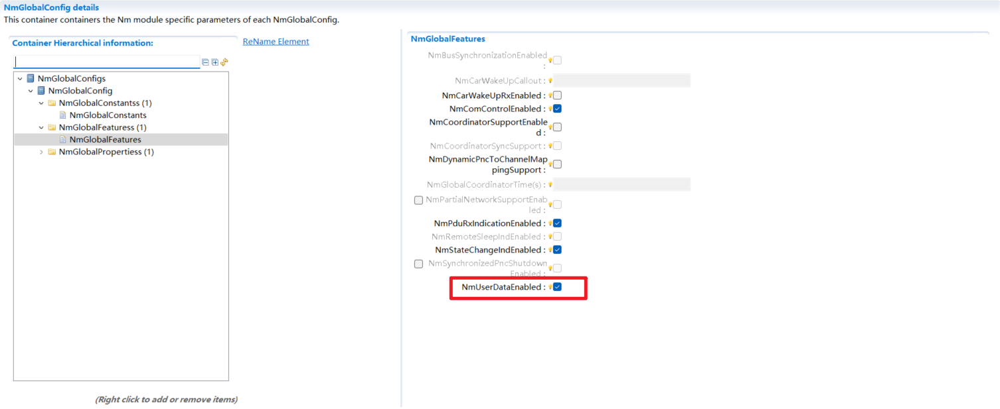
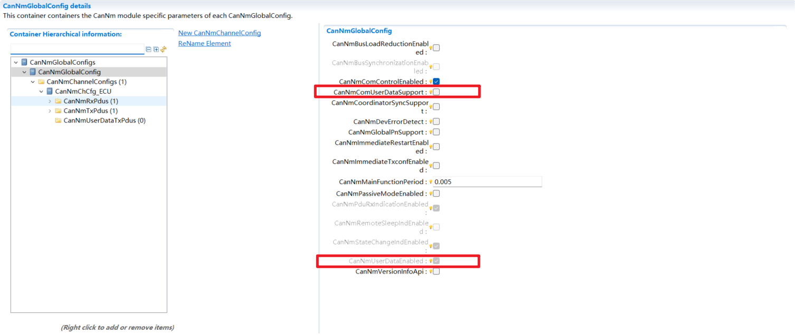
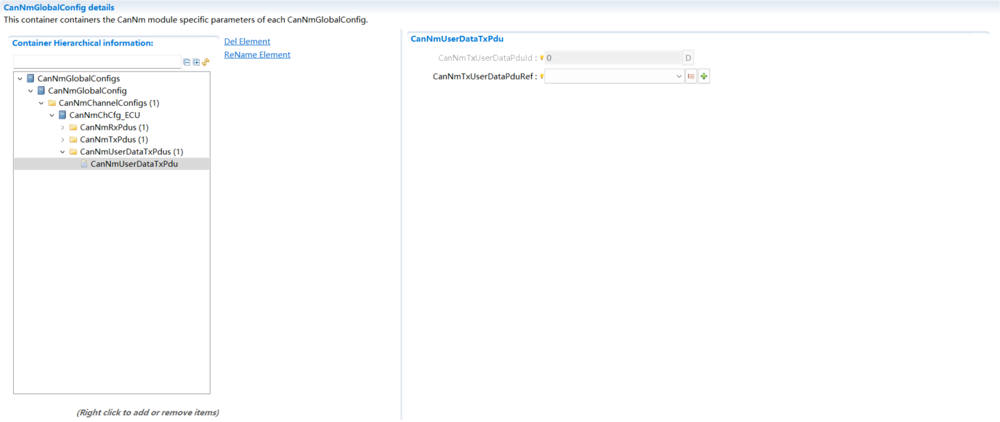
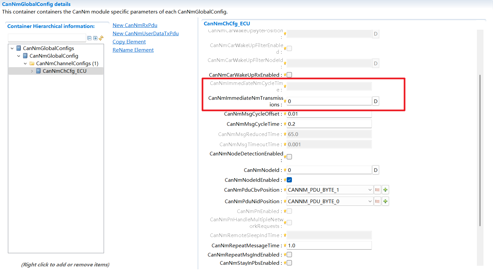
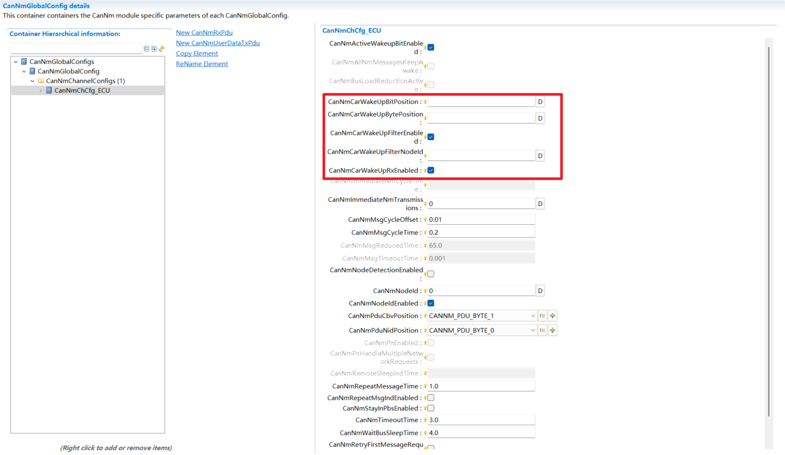

配置(Configuration)¶
基础配置(Basic Configuration)¶
CanNmGlobalConfig需要配置CanNmMainFunctionPeriod，单位为毫秒(ms)。作为CanNm主函数的运行周期，所有的计时器都在每次主函数中递减一次。
The CanNmGlobalConfig requires configuration of the CanNmMainFunctionPeriod in milliseconds (ms). This period defines the execution cycle of the CanNm main function, during which all managed timers are decremented once.

CanNmGlobalConfig基础配置¶
CanNmGlobalConfig Basic Configuration
CanNmChannelConfig中为该通道配置基础的运行参数，包括报文发送周期、自动流转状态的持续时间、引用ComM的Channel配置。
The CanNmChannelConfig configures basic channel parameters, including the message transmission period, the duration for automatic state transitions, and a reference to the ComM Channel configuration.

CanNmChannelConfig基础配置¶
CanNmChannelConfig Basic Configuration
每个CanNmChannelConfig需要创建CanNmRxPdu和CanNmTxPdu。CanNmRxPdu可以创建多个，CanNmTxPdu仅一个。
Each CanNmChannelConfig must define one CanNmTxPdu and may define multiple CanNmRxPdus.

CanNmPdu基础配置¶
CanNmPdu Basic Configuration
每个容器引用的Pdu需要绑定在CanIf模块，根据收发防线配置到CanIfInitCfg/CanIfRxPduCfg和CanIfInitCfg/CanIfTxPduCfg
Each container’s referenced PDU must be bound to the CanIf module. Based on its transmission or reception direction, it is then defined in either CanIfInitCfg/CanIfTxPduCfg or CanIfInitCfg/CanIfRxPduCfg.

CanIfPdu基础配置¶
CanIfPdu Basic Configuration
UserData¶
启动CanNm的UserData功能需要在Nm模块勾选NmGlobalFeatre/NmUserDataEnabled，将默认勾选所有<Bus>NmUserDataEnabled
To enable the CanNm UserData feature, select NmGlobalFeature/NmUserDataEnabled in the Nm module. This action automatically enables all corresponding <Bus>NmUserDataEnabled configurations by default.

NmUserDataEnabled¶
此时CanNmComUserDataSupport未勾选则启动API方式通过Nm模块透传设置网络管理报文UserData字段
If CanNmComUserDataSupport is disabled, the API method is used to directly set the NM PDU’s UserData field through the Nm module via pass-through.

CanNmUserData¶
若CanNmComUserDataSupport勾选，则屏蔽掉API，使能ComSignal形式设置网络管理报文UserData字段。此时需要配置CanNmUserDataTxPdu，该容器每个通道仅可配置一个。需要在PduR配置PduRRoutingPath将该Pdu配置到PduRDestPdu，并配置ComSignal以及相应的Pdu到PduRSrcPdu
If CanNmComUserDataSupport is enabled, the API method is disabled and the ComSignal mechanism is used to set the NM PDU’s UserData field. This requires configuration of a CanNmUserDataTxPdu container (limited to one per channel). In PduR, configure a PduRRoutingPath to route this PDU to a PduRDestPdu, and map the corresponding ComSignal and its source PDU to a PduRSrcPdu.

CanNmUserDataTxPdu¶
快速发送(Fast Transmission)¶
快速发送机制需要先配置CanNmImmediateNmTransmission决定快速发送的次数，当CanNmImmediateNmTransmission > 0时才可配置CanNmImmediateNmCycleTime报文的快速发送周期
The fast transmission mechanism first requires configuring CanNmImmediateNmTransmission to determine the maximum count of fast transmissions. CanNmImmediateNmTransmission > 0 is the prequisite for configuring the fast transmission cycle of CanNmImmediateNmCycleTime messages.

CanNmImmediateNmTransmission¶
总线负载降低(Reduction of Bus Load)¶
使用总线负载降低机制首先需要在CanNmGlobalConfig勾选CanNmBusLoadReductionEnabled
To enable the bus load reduction mechanism, first ensure that CanNmBusLoadReductionEnabled is selected in the CanNmGlobalConfig.

CanNmGlobalConfig负载降低¶
CanNmGlobalConfig load reduction
然后在CanNmChannelConfig中勾选CanNmBusLoadReductionActive后配置CanNmMsgReducedTime
Then enable CanNmBusLoadReductionActive in CanNmChannelConfig and configure CanNmMsgReducedTime

CanNmChannelConfig负载降低¶
(CanNmChannelConfig load reduction)
车辆唤醒 Vehicle Wake-up¶
车辆唤醒功能是通过在接收到的网络管理报文中检测UserData字段中指定bit触发。
The vehicle wake-up function is triggered by detecting a specified bit in the UserData field of an incoming Network Management (Nm) message.
首先需要勾选CanNmChannelConfig/CanNmCarWakeUpRxEnabled，在配置CanNmCarWakeUpBitPosition和CanNmCarWakeUpBytePosition。
First, enable CanNmChannelConfig/CanNmCarWakeUpRxEnabled; then set the values for CanNmCarWakeUpBitPosition and CanNmCarWakeUpBytePosition.
若要启动过滤功能则勾选CanNmChannelConfig/CanNmCarWakeUpFilterNodeId，并填写指定的NodeId到CanNmCarWakeUpFilterNodeId
To enable the filtering function, enable CanNmChannelConfig/CanNmCarWakeUpFilterNodeId, and fill in the specified NodeId into CanNmCarWakeUpFilterNodeId.

CanNmCarWakeUp¶
配置约束(Configuration Constraints)¶
当CanNmMsgCycleOffset > 0时，Nm_StateChangeNotification触发的状态变化不能通过TRIGGERED/DIRECT路径触发CanNm_Transmit，否则NM报文会在CanNmMsgCycleOffset延迟期间内发送，违反SWS_CanNm_00005。
When CanNmMsgCycleOffset > 0, NM state changes triggered by Nm_StateChangeNotification must not trigger CanNm_Transmit through a TRIGGERED/DIRECT path. Otherwise, NM messages will be transmitted during the CanNmMsgCycleOffset delay period, violating SWS_CanNm_00005.
上述冲突是由以下配置组合引起的，这些配置不应同时启用：
The above conflict is caused by the following configuration combination, which should not be configured simultaneously:
Nm模块：NmStateReportEnabled = TRUE 且 NmComHandleId指向NM User Data I-PDU中的Signal
Nm module: NmStateReportEnabled = TRUE and NmComHandleId points to a Signal in the NM User Data I-PDU
Com模块：该Signal的ComTransferProperty为TRIGGERED或TRIGGERED_ON_CHANGE，且I-PDU的ComTxModeMode为DIRECT或MIXED
Com module: The Signal’s ComTransferProperty is TRIGGERED or TRIGGERED_ON_CHANGE, and the I-PDU’s ComTxModeMode is DIRECT or MIXED
PduR模块：该Com I-PDU到CanNm UserDataTxPdu的If Tx路由PduRDestPduDataProvision = DIRECT
PduR module: The If Tx route from this Com I-PDU to CanNm UserDataTxPdu has PduRDestPduDataProvision = DIRECT
CanNm模块：CanNmMsgCycleOffset > 0
CanNm module: CanNmMsgCycleOffset > 0
OsTask内执行顺序配置建议 (Execution order configuration within OsTask)¶
配置 BSW MainFunction 对应的 BswSchedulableEntity 到 OsTask 的映射关系时，建议通过 RteBswEventToTaskMapping/RteBswPositionInTask 等配置，确保在每两次 CanNm_MainFunction 执行之间，至少依次执行一次 ComM_MainFunction 和 CanSM_MainFunction，即执行顺序应满足：
When configuring the mapping of BSW MainFunction-related BswSchedulableEntitys to OsTask, it is recommended to use RteBswEventToTaskMapping/RteBswPositionInTask or equivalent execution-order configuration to ensure that ComM_MainFunction and CanSM_MainFunction are executed at least once in sequence between two consecutive CanNm_MainFunction executions. The execution order should be:
CanNm_MainFunction -> ComM_MainFunction -> CanSM_MainFunction -> CanNm_MainFunction
AUTOSAR BSW 网络状态切换基于异步处理机制。当网络由休眠唤醒或产生本地通信请求时，底层 Tx Path 的开启不能通过 API 调用同步完成，而是依赖各模块主函数逐级推进：由 CanNm 或外部事件触发 ComM，ComM_MainFunction 完成通信状态仲裁，CanSM_MainFunction 执行状态切换并最终调用 CanIf 打开物理发送通道。
The AUTOSAR BSW network state transition is based on an asynchronous processing mechanism. When the network is woken up from sleep or a local communication request is generated, the lower-layer Tx Path cannot be enabled synchronously through an API call. Instead, it depends on the step-by-step processing of module MainFunctions: CanNm or an external event triggers ComM, ComM_MainFunction arbitrates the communication state, and CanSM_MainFunction performs the state transition and finally calls CanIf to enable the physical transmission channel.
如果在下一次 CanNm_MainFunction 到来前，未能按照“先 ComM_MainFunction，后 CanSM_MainFunction”的顺序完成状态机刷新，则 CanNm 尝试发送网络管理报文时，底层发送通道可能尚未开启，导致该报文被 CanIf 拦截并发送失败。因此，建议在 OsTask 内 BswSchedulableEntity 的执行顺序配置中保证上述执行顺序，使网络状态切换在下一个网络管理发送周期前完成闭环。
If the state machines are not refreshed in the order of ComM_MainFunction first and CanSM_MainFunction second before the next CanNm_MainFunction call, the lower-layer transmission channel may still be disabled when CanNm attempts to transmit an NM message. In this case, the message can be blocked by CanIf and transmission can fail. Therefore, it is recommended to guarantee the execution order above in the BswSchedulableEntity execution-order configuration within OsTask, so that the network state transition can be completed before the next network management transmission cycle.